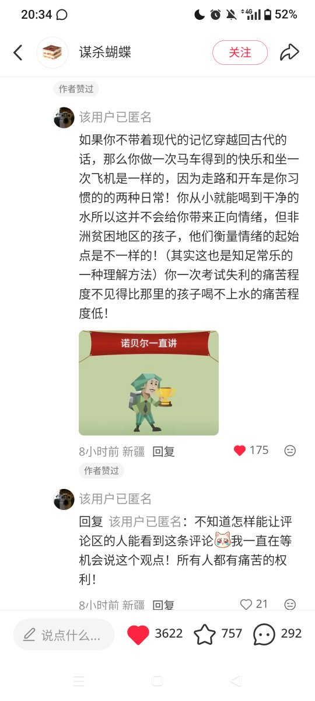

双允喵☄️
@shuangyunonly
RT @OHOHOH121121: 看到这个评论很赞同他所说的。
就比如现在的人一直去比较自己惨不惨，割的深不深来评价那人是否是真的痛苦。
但是，痛苦是量身定制的砝码，人人都有自己的秤
所以与其去纠结自己是否是惨的还是痛苦的，不如坦然的接受自己吧！
虽然我也是在这里面挣扎就是了…

梦幻的奇迹乐园
@OHOHOH121121
看到这个评论很赞同他所说的。
就比如现在的人一直去比较自己惨不惨，割的深不深来评价那人是否是真的痛苦。
但是，痛苦是量身定制的砝码，人人都有自己的秤
所以与其去纠结自己是否是惨的还是痛苦的，不如坦然的接受自己吧！
虽然我也是在这里面挣扎就是了。（当然初澜也是）
----安枫 https://t.co/vunxLcNpRG